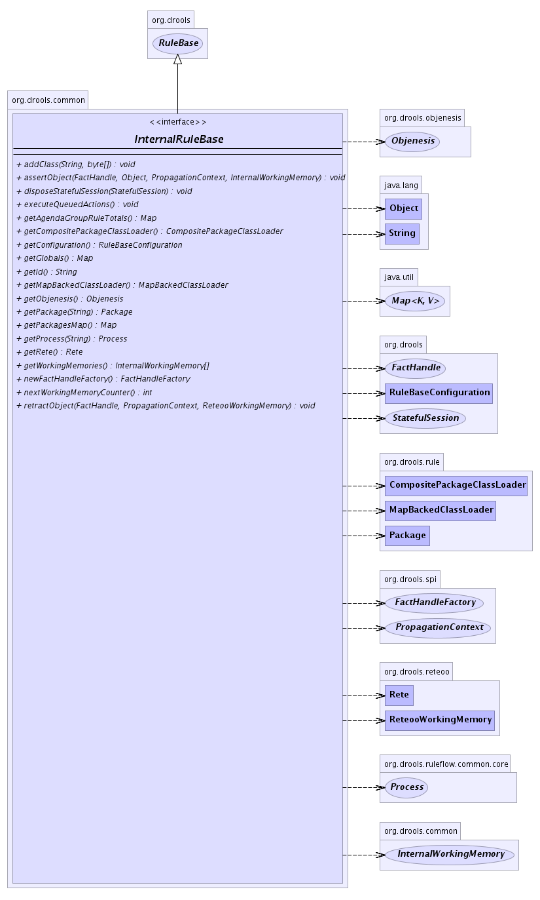

org.drools.common
Interface InternalRuleBase
- All Superinterfaces:
- RuleBase, RuleBaseEventManager, java.io.Serializable
- All Known Implementing Classes:
- AbstractRuleBase, ReteooRuleBase
public interface InternalRuleBase
- extends RuleBase
-
- 
| Methods inherited from interface org.drools.RuleBase |
addPackage, getAdditionsSinceLock, getPackages, getRemovalsSinceLock, getStatefulSessions, lock, newStatefulSession, newStatefulSession, newStatefulSession, newStatefulSession, newStatelessSession, removeFunction, removePackage, removeProcess, removeRule, unlock |
getId
java.lang.String getId()
- Returns:
- the id
nextWorkingMemoryCounter
int nextWorkingMemoryCounter()
newFactHandleFactory
FactHandleFactory newFactHandleFactory()
getGlobals
java.util.Map getGlobals()
getAgendaGroupRuleTotals
java.util.Map getAgendaGroupRuleTotals()
getConfiguration
RuleBaseConfiguration getConfiguration()
getPackage
Package getPackage(java.lang.String name)
- Specified by:
getPackage in interface RuleBase
getPackagesMap
java.util.Map getPackagesMap()
disposeStatefulSession
void disposeStatefulSession(StatefulSession statefulSession)
executeQueuedActions
void executeQueuedActions()
assertObject
void assertObject(FactHandle handle,
java.lang.Object object,
PropagationContext context,
InternalWorkingMemory workingMemory)
throws FactException
- Assert a fact object.
- Throws:
FactException - If an error occurs while performing the assertion.- Parameters:
handle - The handle.object - The fact.workingMemory - The working-memory.
retractObject
void retractObject(FactHandle handle,
PropagationContext context,
ReteooWorkingMemory workingMemory)
throws FactException
- Retract a fact object.
- Throws:
FactException - If an error occurs while performing the retraction.- Parameters:
handle - The handle.workingMemory - The working-memory.
addClass
void addClass(java.lang.String className,
byte[] bytes)
getCompositePackageClassLoader
CompositePackageClassLoader getCompositePackageClassLoader()
getMapBackedClassLoader
MapBackedClassLoader getMapBackedClassLoader()
getRete
Rete getRete()
getWorkingMemories
InternalWorkingMemory[] getWorkingMemories()
getProcess
Process getProcess(java.lang.String id)
getObjenesis
Objenesis getObjenesis()